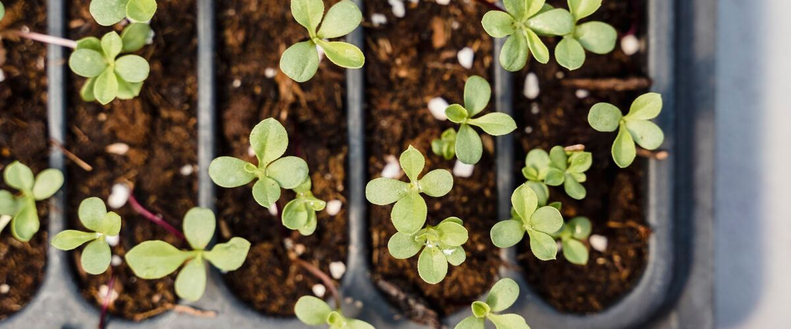

Starting Vegetable Seeds Indoors: A Northwest Timeline
When to start tomatoes, peppers and other seeds indoors in Oregon and Washington, plus the simple setup that grows strong seedlings.
Some crops need more time than a Northwest summer gives them. Tomatoes, peppers and eggplant are the big three: if you sow them outside, they won't ripen before fall. Starting seeds indoors gives them a head start of six to ten weeks, and it opens up hundreds of varieties you'll never find as nursery starts.
When to start
Count back from the date you'll plant outside, not from the last frost. Rainline Garden works this out for each town. For Portland:
- Peppers: start indoors Mar 16–30, plant out May 25 – Jun 15.
- Tomatoes: start indoors Mar 20 – Apr 3, plant out May 15 – Jun 12.
- Broccoli: start indoors Jan 25 – Feb 8, plant out Mar 15 – Apr 19.
Other towns shift a lot. Tomatoes start indoors Mar 20 – Apr 3 in Seattle and Apr 14–28 in Bend. Check your own dates on the planner, or build a dated list with My garden plan.
Starting too early is the most common mistake. Seedlings that wait too long indoors get tall, weak and rootbound.
What you need
- Seed-starting mix. It's lighter and cleaner than garden soil or regular potting soil, which helps prevent seedling diseases.
- Containers with drainage. Cell trays, small pots or recycled yogurt cups with holes punched in the bottom all work.
- Light. A sunny Northwest window in March isn't enough, and seedlings stretch toward it. Simple LED shop lights hung a few inches above the seedlings, on for about 14 to 16 hours a day, grow far sturdier plants. Raise the lights as the plants grow.
- Warmth for sprouting. Tomatoes and especially peppers sprout faster in warm soil. A seedling heat mat helps a lot in a cool house. Take trays off the mat once most seeds are up.
Sowing and growing on
- Moisten the mix before filling containers. It should feel like a wrung-out sponge.
- Sow two or three seeds per cell at the depth on the packet, usually two to three times the seed's width.
- Cover with a clear lid or plastic wrap until seeds sprout, then remove it so air can move.
- Thin to the strongest seedling by snipping the others with scissors.
- Water from the bottom when the surface feels dry, and keep a small fan nearby on low. Moving air makes stems stronger and helps prevent damping off, a fungus that makes seedlings collapse at the soil line.
- Move tomatoes and peppers to bigger pots when they have a couple of true leaves. Tomatoes can be buried up to their first leaves; they'll grow roots along the buried stem.
Harden them off
Seedlings raised indoors have never felt sun, wind or a cool night. About a week before planting out, set them outside in a sheltered spot for an hour or two, then a little longer each day, until they're out all day and night. Skipping this step is how good seedlings get scorched or stunted in their first week in the garden. The glossary has more.